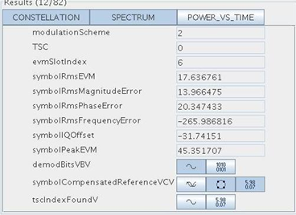

Verifying results
The results panel shows standard specific graphs options and result parameters of the demodulation. The title indicates the number of shown result parameters and the number of total result parameters (excluding graph options). You can configure which graph options and result parameters are shown on this dialog.
Predefined, more commonly used graph options (CONSTELLATION, SPECTRUM, etc.) are put onto the top of the results panel. Each graph option is represented by a toggle button. The state of a toggle button indicates whether the associated graph is opened. You can click the toggle button to open or close the associated graph.
Result parameters are not editable. But you can copy the values. Each vector (including vector of vectors) type result has at least two toggle buttons next to it, one for viewing in graph and the other for viewing in table editor. A tooltip (hover mouse over toggle buttons) tells you the dimension of this vector. The button is disabled if the length of the vector is zero (which is normally true before demodulation). By toggling the button on or off the associated "viewer" will be opened or closed. For complex vector (also vector of complex vectors) type result one additional button is provided so that you can view the complex data in a scatter graph, which provides you the trace trajectory. Note that the table editors which display result vectors are not editable. You cannot insert or delete rows. Nevertheless you can save the vector to an ASCII file.
After a successful demodulation execution all the result values are updated and the result related graphs and table editors will be automatically refreshed. By switching the standard all result parameters are reset to initial values. The following picture shows an example of Results panel.

Functional changes
- Introduced in SmarTest 7.1.2